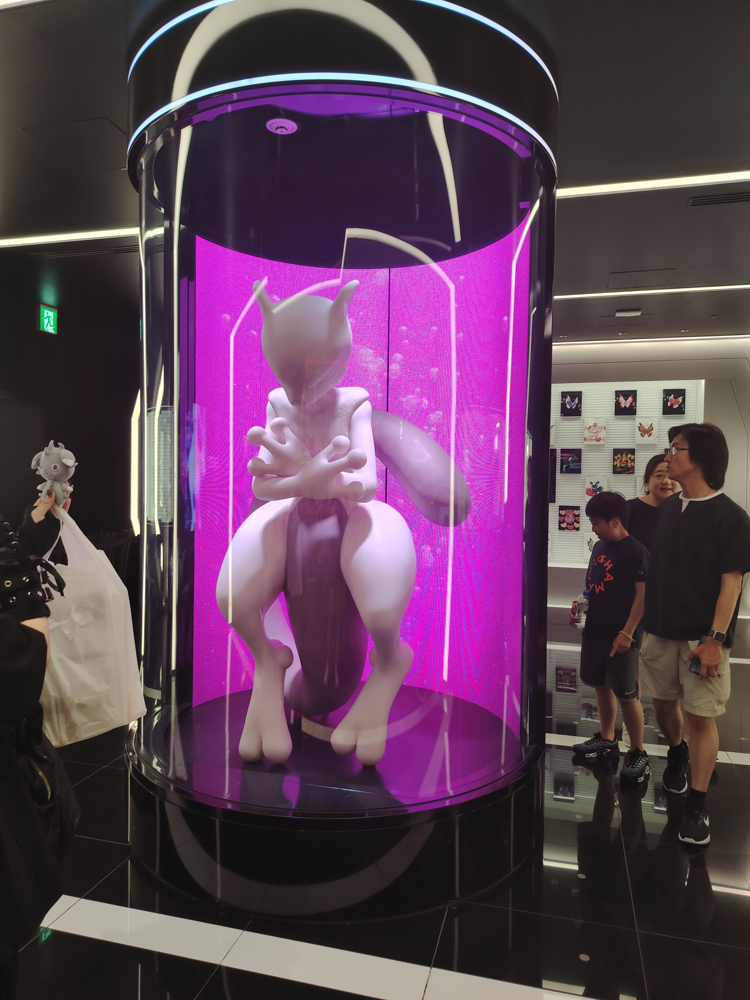

À propos de moi
Bonjour, je m'appelle Candice Carton, j'ai 19 ans et je suis actuellement étudiante en deuxième année de BUT Informatique à l'IUT de Clermont-Ferrand. Passionnée par les technologies depuis mon enfance, mes études me permettent de satisfaire ma curiosité et d'évoluer sur des projets concrets menés dans le cadre de mes SAE et de mes travaux personnels. J'aime particulièrement le développement web, la programmation et l'exploration de nouveaux outils numériques.
En dehors de l'informatique, je suis très attirée par la culture japonaise, les mangas, les animés et les jeux vidéo. Cette diversité d'intérêts nourrit ma créativité et mon envie d'apprendre.




Candice - Étudiante en BUT Info